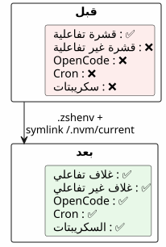

OpenCode والمسار غير الكامل: لماذا لم تكن أدواتك في غلاف الوكيل؟
Publié le 21 April 2026
أنت تقوم بتشغيل OpenCode في terminal الخاص بك، كل شيء يعمل. الوكيل يحاول واحد`gh`— غير موجود. واحد`java -version`— غائب. واحد`node`— لا مكان. ومع ذلك، هذه الأدوات موجودة حقًا في لك القشرة. المشكلة؟ يطلـق OpenCode الأصدافغير تفاعليينالذين لا يقرؤون أبداً`.zshrc`هكذا يمكنك تشخيص وإصلاح ذلك بشكل صحيح
- دق
-
[]
المشهد: عميل أعمى في عالم من الأدوات
كان ذلك مساء يوم الثلاثاء. لقد قمت لتوي بالتركيبhttps://opencode.ai[كود مفتوح], الوكيل الذكي الذي كان يعد بتحويل طريقة البرمجتي. أول اختبار: طلبه أن يُظهر لي مستودعاتي على جيت هاب.
$ opencode
> Utilise gh pour lister mes repos
❌ bash: gh: command not foundغريب.`gh`كان يعمل بشكل مثالي في المحطة الطرفية. أحاول شيئًا آخر:
> Vérifie la version de Java
❌ bash: java: command not foundثم :
> Lance le build Gradle
❌ bash: gradle: command not foundJava, Gradle, Node,gh— كان كل شيء غير مرئي للوكيل. كان طرفي، هو، يرى كل شيء. كما لو أن الوكيل وأنا نعيش في عالمين موازيين.
قضيت ساعات في الفهم. ساعات من`echo $PATH`, de which java, من الإحباط المتزايد. في النهاية فهمت أن المشكلة لم تكن الأدوات — بل كانتشل. OpenCode، مثل أي وكيل يطلق العمليات الفرعية، يعمل في القشراتغير تفاعليين. و زش، في هذه الأصداف، يتجاهل ببساطة`.zshrc`.
ما يلي هو السرد الكامل لهذا التشخيص، والحل، والدروس التي تعلمتها. إذا كنت تستخدم وكيل ذكاء اصطناعي — OpenCode, Aider, Cursor، أو حتى سكريبتات cron — فسيؤثر هذا الأمر عليك يوماً ما.
تشريح الخطأ : قشرتين، عالمين
عندما تفتح الطرفية، يتعامل Zsh معها كغلافتفاعلي. يشحن`.zshrc`, الذي يبدأ كل شيء : SDKMAN، NVM، pnpm، الأسماء المستعارة، المُحفّز الجميل الخاص بك. بيئتك مكتملة.
لكن عندما ينفذ OpenCode أمرًا، لا يقوم بتشغيل محطة تفاعلية. إنه يشغل غلافًاغير تفاعلي— قشرة المهمة، بدون إنسان خلف الشاشة. و Zsh، في هذا السياق، يتخطى`.zshrc`. لا يقرأ إلا`.zshenv`.
لماذا توجد هذه التمييز؟ لأن shell غير التفاعلي مصمم لتشغيل النصوص البرمجية، وليس لخدمة مستخدم بشري. تحميل الألياس، والنمط، والإكمالات في نص برمجي يعمل في الخلفية سيكون هدرًا. المشكلة هي أن متغير PATH الخاص بك — وهو المعلومات الأكثر أهمية لتحديد مكان الملفات القابلة للتنفيذ — غالبًا ما يتم تهيئته داخل`.zshrc`, ليس في`.zshenv`.
Failed to generate image: PlantUML preprocessing failed: [From <input> (line 5) ] @startuml skinparam backgroundColor #FEFEFE actor "أنتِ" as user actor "OpenCode ^^^^^ Syntax Error? (Assumed diagram type: sequence) @startuml skinparam backgroundColor #FEFEFE actor "أنتِ" as user actor "OpenCode (وكل)" as agent participant "قشرة تفاعلية (.zshrc تم تحميله)" as ishell participant "شل غير تفاعلي (.zshrc تم تجاهله)" as nshell user -> ishell : gh, java, node ✅ agent -> nshell : gh, java, node ❌ note right of ishell Source .zshrc : - SDKMAN init - NVM init - ~/apps dans PATH - pnpm dans PATH end note note right of nshell .zshrc ignoré ! PATH = /usr/bin:/bin + quelques répertoires défaut end note @enduml
جذر المشكلة:Zsh لا يُجري مصدر .zshrc إلا للأغلفة التفاعليةيستخدم OpenCode، مثل أي وكيل ذكاء اصطناعي يطلق عمليات فرعية، الأصداف غير التفاعلية. هذه الأصداف تقرأ فقط`.zshenv`.
المذنوبون: .zshrc مقابل `.zshenv
Zsh لديهأربعة ملفات تهيئة, كل واحد له دور محدد. هذا التصميم أنيق — لكنه أيضًا عقدة المشكلة:
ملف |
مصدر عندما |
دور |
هل تعديل الـ PATH ؟ |
|
دائماً(تفاعلي + غير تفاعلي + تسجيل الدخول) |
متغيرات بيئة أساسية، PATH |
نعم — هذا هو مكان SA |
|
غلاف تسجيل الدخول فقط |
الأوامر البطيئة (مرة واحدة لكل جلسة) |
ممكن |
|
قشور تفاعلية فقط |
اسم مستعار, مطالبة, إكمال, أدوات تفاعلية |
ليس للمتغيرات الحرجة |
|
أغلفة تسجيل الدخول (بعد .zshrc) |
رسائل الترحيب، الإتمام |
نادراً |
يُعطي الجدول إشارةً، لكن يجب فهمه بعمق. فكّر فيه كأجزاء المنزل :
-
`.zshenv`هوبهو المدخل— كل شخص يمر من هنا، سواء كان زائرًا أو مقيمًا. إذا وضعت شيئًا هنا، أي قشرة ستتمكن من رؤيته.
-
`.zshrc`هوصالون— فقط المقيمون (الأصداف التفاعلية) يدخلون هناك. الزوار (الأصداف غير التفاعلية) يبقون في الردهة.
-
.zprofileet `.zlogin`هي قطع متخصصة لأغلفة تسجيل الدخول (مثلاً عندما تتصل عبر SSH).
الدراما هي أن معظمنا يضعون PATH في غرفة المعيشة. والوكيل الذكاء الاصطناعي، هو، لا يحق له أبداً الدخول هناك.
المشكلة في رسم توضيحي:

عندما تفتح محطّة، يكون Zsh تفاعليًا: يقرأ`.zshrc`, كل شيء يعمل. عندما يطلق OpenCode شلًا لتنفيذ أمر، Zsh غير تفاعلي: فإنه يتخطى`.zshrc`, يقرأ فقط`.zshenv`. Et si `.zshenv`غير موجود أو لا يحتوي على PATH — إنه صحراء
|
لماذا يفعل Zsh ذلك؟هذا اختيار تصميم ورث من يونكس. يجب أن يكون شل غير تفاعليسريع et قابل للتكرار. تحميل الأسماء المستعارة، المطالبات الملونة والإعدادات الثقيلة لـ SDKMAN في سكريبت cron أو وكيل ذكاء اصطناعي سيكون بطيئًا وضعيفًا. التقسيم إذًا منطقي:`.zshenv`بشكل أساسي (المتغيرات، PATH)`.zshrc`من أجل الراحة (aliases, prompt, نكمل). المشكلة تظهر عندما نضع الأساس في الراحة. |
تشخيص خطوة بخطوة
قبل التصحيح، يجب أن تفهم بالضبط ما يفتقد. هذه طريقة تشخيص قابلة للتكرار — احفظها في المفضلة إذا كنت تعمل مع وكلاء ذكاء اصطناعي.
تحقق من مسار (PATH) الوكيل
نقارن ما يراه terminal التفاعلي لديك مع ما يراه shell غير التفاعلي — أي ما يراه OpenCode.
# Dans votre terminal interactif (tout fonctionne)
echo $PATH | tr ':' '\n' | grep -v '^/usr' | sortالنتيجة النموذجية :
/home/cheroliv/apps
/home/cheroliv/.nvm/versions/node/v22.19.0/bin
/home/cheroliv/.sdkman/candidates/java/current/bin
/home/cheroliv/.sdkman/candidates/gradle/current/bin
/home/cheroliv/.local/share/pnpm
/home/cheroliv/.local/binالآن، لنحاكي ما يراه الوكيل — قشرة غير تفاعلية :
# Shell non-interactif : pas de .zshrc
zsh -c 'echo $PATH' | tr ':' '\n' | grep -v '^/usr' | sortالنتيجة :
/home/cheroliv/.local/binاختفت خمسة مسارات من أصل ستةالوكيل مبتور بنسبة 83٪ من بيئته. الأمر كما لو طلبوا منك أن تطبخ دون نصف أدواتك — قد تتمكن من غلي الماء، لكن لا شيء آخر تقريبًا.
|
الأمر`zsh -c 'echo $PATH'`هوأداة التشخيص رقم 1. إذا كان أحد الأدوات التي تستخدمها يوميًا غائبًا عن النتيجة، فلن يتمكن الوكيل الذكائي الخاص بك أيضًا من رؤيته. اختبرها قبل وبعد كل تعديل`.zshenv`. |
2. حدد ما هو داخل .zshrc لكن ليس داخل .zshenv
الآن، نبحث عن المذنب في`.zshrc`. نقوم بتصفية الأسطر التي تذكر أدواتنا :
grep -n 'apps\|SDKMAN\|NVM\|PNPM\|PATH' ~/.zshrcعادةً ما نجد :
119: PATH="/usr/bin/python3:$HOME/apps:$PATH" # ← pas exporté !
171: export NVM_DIR="$HOME/.nvm"
172: [ -s "$NVM_DIR/nvm.sh" ] && \. "$NVM_DIR/nvm.sh" # ← NVM init
176: nvm use --lts --silent # ← active une version
179: export PNPM_HOME="/home/cheroliv/.local/share/pnpm"
187: export SDKMAN_DIR="$HOME/.sdkman"
188: [[ -s "$HOME/.sdkman/bin/sdkman-init.sh" ]] && source "$HOME/.sdkman/bin/sdkman-init.sh"كل ذلك هوغير مرئيلـ OpenCode. و ال`PATH`من السطر 119 ليس حتى`export`é — لا يترك أبدًا القشرة الحالية. هذا تفصيل تقني حاسم: متغير بدون`export`يبقى محليًا للقشرة التي تحددها. القشرات الفرعية — مثل تلك التي تم إطلاقها بواسطة OpenCode — لا ترثها أبدًا.
3. التحقق مما إذا كان .zshenv موجودًا
cat ~/.zshenv 2>/dev/null || echo "FICHIER ABSENT"إذا كانت الإجابة هي « FICHIER ABSENT », فهنا يلعب كل شيء.
الحل : .zshenv + المسارات الصحيحة
الاستراتيجية بسيطة، لكنّها تتطلب دقة: وضع في`.zshenv` فقطالمسارات الأساسية، بدون تشغيل سكريبتات التهيئة الثقيلة. لا نقوم بنقل`.zshrc`في`.zshenv`— نستخرج الجوهر.
إنشاء .zshenv مع جميع المسارات الأساسية
`.zshenv`هوملف واحدأن Zsh يضمن استيراده فيالجميعالسياقات. هذا هو المكان الذي يجب أن يذهب فيه PATH.
export SDKMAN_DIR="$HOME/.sdkman"
export NVM_DIR="$HOME/.nvm"
export PNPM_HOME="$HOME/.local/share/pnpm"
export PATH="$HOME/apps:$HOME/.sdkman/candidates/java/current/bin:$HOME/.sdkman/candidates/gradle/current/bin:$HOME/.nvm/current/bin:$PNPM_HOME:$HOME/.local/bin:$HOME/.local/share/JetBrains/Toolbox/scripts:/usr/bin/python3:$PATH"|
نستخدم`$HOME/.nvm/current/bin`و ليس`$HOME/.nvm/versions/node/v22.19.0/bin`. السبب: تتغير الإصدارات Node. يصبح المسار الثابت غير صحيح في المرة القادمة`nvm install`. مزيد من التفاصيل في القسم التالي. |
لماذا لا source sdkman-init.sh في .zshenv؟
النهج الأكثر إغراءً سيكون ببساطة إعادة إنتاجه في`.zshenv`ما نفعله في`.zshrc`— احصل على سكريبتات التهيئة. نحنيمكنأن يُغرى بفعل :
# ❌ MAUVAISE IDÉE
[[ -s "$HOME/.sdkman/bin/sdkman-init.sh" ]] && source "$HOME/.sdkman/bin/sdkman-init.sh"المشكلات :
-
بطيء:`sdkman-init.sh`يقوم بإجراء حلول الشبكة والتحقق في كل شِل. في شِل غير تفاعلي، هذا تكلفة غير ضرورية.
-
هش: يتوقع SDKMAN سياقًا تفاعليًا. قد تفشل تهيئته بصمت في أنبوب أو قشرة فرعية.
-
غير مفيد: SDKMAN يضع مرشحوه في`~/.sdkman/candidates/<tool>/current/bin`— الروابط الرمزية المستقرة التي تشير إلى الإصدار النشط. يمكننا استخدامهابشكل مباشر.
النهج الصحيح: تجنب تهيئة SDKMAN والإشارة مباشرة إلى الروابط الرمزية`current`. هذا هو مفتاح الحل بالكامل :استخدام بنية الملفات كعقد بدلاً من كود التهيئة.
Failed to generate image: PlantUML preprocessing failed: [From <input> (line 5) ]
@startuml
skinparam backgroundColor #FEFEFE
rectangle "نهج بطيء
(source sdkman-init.sh)" as slow {
^^^^^
Syntax Error? (Assumed diagram type: activity)
@startuml
skinparam backgroundColor #FEFEFE
rectangle "نهج بطيء
(source sdkman-init.sh)" as slow {
card ".zshenv source sdkman-init.sh
2-3 ثوانٍ لكل شل
فحوصات الشبكة
خطر الفشل" as s1 #FDEDEC
}
rectangle "نهج سريع
(روابط رمزية مباشرة)" as fast {
card ".zshenv export PATH=...current/bin\n0 ms\nلا شبكة\nلا تهيئة" as s2 #E8F8E8
}
slow --> fast : Même résultat final\nLe PATH pointe sur current/bin\ndans les deux cas
@enduml
الحالة NVM: عندما ينسى مدير الإصدارات ترك أثر
المشكلة NVM
هنا أوصلني التحقيق إلى أبعد مدى. SDKMAN يتميز بتصميم أنيق: عندما نقوم به`sdk install java 25.0.2-tem`ينشئ symlink:
~/.sdkman/candidates/java/current -> ~/.sdkman/candidates/java/25.0.2-temهذا الرابط الرمزي هومحدث دائماً. اشِر إليه فيه`.zshenv`و أنت مغطى، مهما كان القشرة. جميل.
NVM, هو, لا يخلقلا شيءمن مثل. لا رابط رمزي`current`. لا توجد نقطة ربط ثابتة. يجب أن نحدد مساراً ثابتاً مُصدَّرًا يشبه هذا :
~/.nvm/versions/node/v22.19.0/bin/nodeفي التالي`nvm install 24`, هذا المسار ميت. لك`.zshenv`سيشير إلى نسخة ليست النسخة النشطة. إنها قنبلة موقوتة.
|
لماذا يفعل NVM ذلك؟NVM يعمل عن طريق تعديل PATH بشكل ديناميكي في كل`nvm use`. تم تصميمه للمطورين الذين يغيّرون الإصدار بشكل متكرر، في غلاف تفاعلي. الرابط الرمزي`current`لم يكن في المواصفات الأولية — إنه نسيان في التصميم سنقوم بتصحيحه نحن أنفسنا. |
الحل: إنشاء الرابط current لـ NVM
لأن NVM لا يفعل ذلك، نحن نفعله بأنفسنا. المبدأ هو نفس المبدأ في SDKMAN — رابط رمزي`current`الذي يشير دائمًا إلى النسخة النشطة. نقوم بإنشائه مرة واحدة، ثم نقوم بأتمتته ليحدث نفسه تلقائيًا.
# Créer le symlink initial
ln -sfn "$HOME/.nvm/versions/node/v22.19.0" "$HOME/.nvm/current"الآن، في`.zshenv`, يستخدم :
$HOME/.nvm/current/binبدلاً من :
# ❌ Chemin en dur — cassé au prochain changement de version
$HOME/.nvm/versions/node/v22.19.0/binأتمتة تحديث الرابط الرمزي
لا يقدّر الرمز الوصل أي شيء إذا لم يتم تحديثه. الرمز الوصل`current`يجب أن يُحدّث عندما يفعل أحد`nvm use` ou nvm install. الحل : واحدغلاف— دالة تغلف الأمر الحقيقي`nvm`و يقوم بتحديث الرابط الرمزي بعد كل استدعاء
# À la fin de .zshrc, APRÈS le chargement de NVM
nvm use --lts --silent
ln -sfn "$(nvm_version_path "$(nvm current)")" "$NVM_DIR/current"
_nvm() {
command nvm "$@"
local rc=$?
ln -sfn "$(nvm_version_path "$(nvm current)")" "$NVM_DIR/current"
return $rc
}
alias nvm='_nvm'كيف يعمل، بالتفصيل :
Failed to generate image: PlantUML preprocessing failed: [From <input> (line 5) ] @startuml skinparam backgroundColor #FEFEFE actor Développeur participant "غلاف nvm ^^^^^ Syntax Error? (Assumed diagram type: sequence) @startuml skinparam backgroundColor #FEFEFE actor Développeur participant "غلاف nvm (_nvm)" as wrapper participant "nvm حقيقي (command nvm)" as realnvm participant "~/.nvm/current (symlink)" as symlink Développeur -> wrapper : nvm use 20 wrapper -> realnvm : command nvm use 20 realnvm --> wrapper : version activée wrapper -> symlink : ln -sfn .../v20.16.0 ~/.nvm/current wrapper --> Développeur : retour note right of symlink Toujours à jour ! Utilisé par .zshenv → accessible par OpenCode end note @enduml
الغلاف`_nvm`يستدعي الأمر الحقيقي`nvm`, ثم يحدث الرابط الرمزي. الاسم المستعار`nvm='_nvm'`يضمن عند الكتابة`nvm`, نمر عبر الغلاف. وعند تهيئة القشرة، نفعل الشيء نفسه لاحقًا`nvm use --lts`.
|
`nvm_version_path`هي وظيفة داخلية لـ NVM تحل مسار النسخة الكامل. هذا يتجنب إعادة بناء المسار يدويًا. |
جدول ملخص المسارات
قبل الانتقال إلى الفخاخ، ملخص بصري للتحويل. على اليسار، ما كان لديك (كل شيء في`.zshrc`, غير مرئي للوكيل). على اليمين, ما لديك الآن (المسارات الأساسية في`.zshenv`, مرئية في كل مكان).
| أداة | قبل (.zshrc فقط) | بعد (.zshenv + symlink) | مرئي من قبل OpenCode؟ |
|---|---|---|---|
|
PATH غير مصدّر في .zshrc |
`$HOME/apps`في .zshenv |
✅ |
SDKMAN جافا |
`sdkman-init.sh`مصدر في .zshrc |
`$HOME/.sdkman/candidates/java/current/bin`في .zshenv |
✅ |
SDKMAN Gradle |
`sdkman-init.sh`تم تفعيله في .zshrc |
`$HOME/.sdkman/candidates/gradle/current/bin`في .zshenv |
�✅ |
NVM Node |
`nvm use --lts`في .zshrc |
`$HOME/.nvm/current/bin`في .zshenv (رابط رمزي) |
�✅ |
pnpm |
`$PNPM_HOME`في .zshrc |
`$PNPM_HOME`في .zshenv |
✅ |
JetBrains Toolbox |
تمت إضافته تلقائيًا بواسطة Toolbox في .zshrc |
`$HOME/.local/share/JetBrains/Toolbox/scripts`في .zshenv |
�✅ |
بايثون 3 |
`/usr/bin/python3`في PATH .zshrc |
بشكل صريح في .zshenv |
�✅ |
المصائد والتخفيف
ليس كل شيء مثاليًا مع هذا النهج. هذه هي المشكلات التي واجهتها، وكيفية تجنبها.
| فخ | وصف | التخفيف |
|---|---|---|
PATH مكرر |
إذا .zshenv و .zshrc يضيفان نفس المسار، يظهر مرتين |
`.zshenv`مستمدقبل.zshrc. يتم قراءة الاثنين في شِـلّ تفاعلي. قد يكرّر المتغيّر PATH. إنه أمر جمالي فقط، ليس وظيفيًا. لتجنبه: لا تضع في .zshenv سوى المسارات الغائبة عن PATH الافتراضي. |
NVM : النسخة الثابتة في .zshenv |
وضع`~/.nvm/versions/node/v22.19.0/bin`الصّلب يصبح خاطئًا في التالي`nvm install` |
استخدم الرابط الرمزي`$HOME/.nvm/current/bin`+ الغلاف`_nvm`في .zshrc |
SDKMAN : source sdkman-init.sh في .zshenv |
بطيء، هش، عديم الفائدة في شل غير تفاعلي |
استخدام الروابط الرمزية`candidates/<tool>/current/bin`مباشرة |
اسم مستعار مفقود بعد التعديل |
الغلاف`nvm='_nvm'`في .zshrc لا يدخل حيز التنفيذ إلا بعد إعادة التحميل |
أعد تشغيل القشرة أو`source ~/.zshrc` |
OpenCode لا يرى التغييرات |
الوكيل قد أطلق بالفعل شيلاته الفرعية باستخدام ملف .zshenv القديم |
إعادة تشغيل OpenCode بعد تعديل .zshenv |
.zshenv مثقل جداً |
ضع وظائف ثقيلة أو تهيئة تفاعلية في .zshenv |
.zshenv = متغيرات البيئة + PATH فقط. لا`source`, بدون وظائف ثقيلة، بدون أوامر |
الدروس المستفادة
-
.zshrc` تفاعلي،
.zshenvشامل— إذا كان يجب أن توجد متغير في جميع الأغلفة (وكلاء الذكاء الاصطناعي, cron, النصوص, IDE)، فإنها تذهب إلى`.zshenv`. الصالون مريح، لكن بهو الدخول هو المكان الوحيد الذي يمر به الجميع. -
مديرو الإصدارات ليسوا متساوين— SDKMAN ينشئ روابط رمزية`current`بالتصميم. NVM لا. يجب سده هذا النقص يدويًا. هذه درس مهم : قبل ضبط مسار مسار PATH الخاص بك، تحقق مما إذا كان مديرك يوفر نقطة مرساة ثابتة.
-
لا تقم بسحب سكريبتات الـ init في .zshenv—
sdkman-init.shet `nvm.sh`تم تصميمها لقشرة تفاعلية. هم بطيئون وهشون في سياق غير تفاعلي. الروابط الرمزية`current`تكفي وتكون فورية. -
دائماً الاختبار في شل غير تفاعلي—`zsh -c 'echo $PATH'`يُحاكي بدقة ما يراه الوكيل. هذا اختبار التحقق. بدون هذا الاختبار، لا تعرف إذا كان التكوين يعمل للوكلاء.
-
نمط الـwrapper قابل لإعادة الاستخدام— النمط نفسه`_nvm`+`alias nvm='_nvm'`يتطبق على أي أداة تعدل المتغير PATH بشكل ديناميكي دون ترك أثر ثابت. هذه أداة إضافية في صندوق أفكارك.

التحقق النهائي
بعد إنشاء`.zshenv`والارتباط الرمزي NVM، تأكد من أن كل شيء يعمل — في السياقين :
# Shell interactif (votre terminal)
gh --version && java -version && node --version# Shell non-interactif (simulation OpenCode)
zsh -c 'gh --version && java -version && node --version'يجب أن ينجح كلاهما. إذا كان الأمر كذلك، سي thấy الوكيل الذكاء الاصطناعي الخاص بك نفس الأدوات التي تراها. إذا لم يكن كذلك، عد إلى التشخيص خطوة بخطوة — من المحتمل أنك نسيت مساراً أو أن رابط NVM الرمزي غير محدث.
|
قم بأتمتة هذا الاختبار.أضف هذا الفحص في سكريبت فحص الصحة الذي تشغله بعد كل تحديث لأدواتك. واحد`zsh -c 'which java && which node && which gh'`في CI، إنه تأمين ضد المفاجآت. |
_ الـ shell غير التفاعلي هو كضيف صامت: لا يقرأ سوى ما هو معروض على باب الدخول. إذا كان الـ PATH في غرفة الجلوس، فلن يره أبداً. _
روابط
التوثيق الرسمي
-
توثيق Zsh : ملفات بدء التشغيل— المرجعية الرسمية لملفات تهيئة Zsh. هناك يتم شرح كل شيء، حتى لو كان يُنسى غالبًا.
-
OpenCode : الإعدادكيفية إعداد OpenCode وبيئته للتنفيذ
الأدوات المذكورة
-
NVM على جيت هب— Node Version Manager. مدير الإصدارات Node.js.
-
SDKMAN — الموقع الرسمي— SDKMAN! مدير الإصدارات للـ JVM (Java, Kotlin, Gradle…)
-
SDKMAN : التثبيت— دليل تثبيت SDKMAN.
-
gh` — واجهة سطر أوامر GitHub— أداة سطر الأوامر GitHub، لا غنى عنها لكل مطور.
-
Gradle — الموقع الرسمي— نظام البناء الذي نقوم بتثبيته عبر SDKMAN.
-
pnpm — الموقع الرسمي— مدير حزم Node.js السريع والاقتصادي في المساحة
-
صندوق أدوات JetBrains— مدير IDE JetBrains، الذي يضيف نصوصه إلى PATH.
لمتابعة المزيد
-
ملفات إعدادات Zsh: دليل شامل— مقال تفصيلي حول إدارة ملفات نقطة Zsh.
-
زِش على أرشويكي— إحدى أفضل الوثائق المجتمعية حول Zsh.
-
NVM مشاكل GitHub— لرؤية المناقشات حول الرابط الرمزي`current`ومشاكل PATH